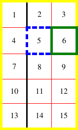

Diagram of a table with a caption above it.
Contents
This chapter defines the processing model for tables in CSS. Part of this processing model is the layout. For the layout, this chapter introduces two algorithms; the first, the fixed table layout algorithm, is well-defined, but the second, the automatic table layout algorithm, is not fully defined by this specification.
For the automatic table layout algorithm, some widely deployed implementations have achieved relatively close interoperability.
Table layout can be used to represent tabular relationships between data. Authors specify these relationships in the document language and can specify their presentation using CSS 2.
In a visual medium, CSS tables can also be used to achieve specific layouts. In this case, authors should not use table-related elements in the document language, but should apply the CSS to the relevant structural elements to achieve the desired layout.
Authors may specify the visual formatting of a table as a rectangular grid of cells. Rows and columns of cells may be organized into row groups and column groups. Rows, columns, row groups, column groups, and cells may have borders drawn around them (there are two border models in CSS 2). Authors may align data vertically or horizontally within a cell and align data in all cells of a row or column.
Here is a simple three-row, three-column table described in HTML 4:
<TABLE> <CAPTION>This is a simple 3x3 table</CAPTION> <TR id="row1"> <TH>Header 1 <TD>Cell 1 <TD>Cell 2 <TR id="row2"> <TH>Header 2 <TD>Cell 3 <TD>Cell 4 <TR id="row3"> <TH>Header 3 <TD>Cell 5 <TD>Cell 6 </TABLE>
This code creates one table (the TABLE element), three rows (the TR elements), three header cells (the TH elements), and six data cells (the TD elements). Note that the three columns of this example are specified implicitly: there are as many columns in the table as required by header and data cells.
The following CSS rule centers the text horizontally in the header cells and presents the text in the header cells with a bold font weight:
th { text-align: center; font-weight: bold }
The next rules align the text of the header cells on their baseline and vertically center the text in each data cell:
th { vertical-align: baseline }
td { vertical-align: middle }
The next rules specify that the top row will be surrounded by a 3px solid blue border and each of the other rows will be surrounded by a 1px solid black border:
table { border-collapse: collapse }
tr#row1 { border: 3px solid blue }
tr#row2 { border: 1px solid black }
tr#row3 { border: 1px solid black }
Note, however, that the borders around the rows overlap where the rows meet. What color (black or blue) and thickness (1px or 3px) will the border between row1 and row2 be? We discuss this in the section on border conflict resolution.
The following rule puts the table caption above the table:
caption { caption-side: top }
The preceding example shows how CSS works with HTML 4 elements; in HTML 4, the semantics of the various table elements (TABLE, CAPTION, THEAD, TBODY, TFOOT, COL, COLGROUP, TH, and TD) are well-defined. In other document languages (such as XML applications), there may not be pre-defined table elements. Therefore, CSS 2 allows authors to "map" document language elements to table elements via the 'display' property. For example, the following rule makes the FOO element act like an HTML TABLE element and the BAR element act like a CAPTION element:
FOO { display : table }
BAR { display : table-caption }
We discuss the various table elements in the following section. In this specification, the term table element refers to any element involved in the creation of a table. An internal table element is one that produces a row, row group, column, column group, or cell.
The CSS table model is based on the HTML4 table model, in which the structure of a table closely parallels the visual layout of the table. In this model, a table consists of an optional caption and any number of rows of cells. The table model is said to be "row primary" since authors specify rows, not columns, explicitly in the document language. Columns are derived once all the rows have been specified -- the first cell of each row belongs to the first column, the second to the second column, etc.). Rows and columns may be grouped structurally and this grouping reflected in presentation (e.g., a border may be drawn around a group of rows).
Thus, the table model consists of tables, captions, rows, row groups (including header groups and footer groups), columns, column groups, and cells.
The CSS model does not require that the document language include elements that correspond to each of these components. For document languages (such as XML applications) that do not have pre-defined table elements, authors must map document language elements to table elements; this is done with the 'display' property. The following 'display' values assign table formatting rules to an arbitrary element:
Replaced elements with these 'display' values are treated as their given display types during layout. For example, an image that is set to 'display: table-cell' will fill the available cell space, and its dimensions might contribute towards the table sizing algorithms, as with an ordinary cell.
Elements with 'display' set to 'table-column' or 'table-column-group' are not rendered (exactly as if they had 'display: none'), but they are useful, because they may have attributes which induce a certain style for the columns they represent.
The default style sheet for HTML4 in the appendix illustrates the use of these values for HTML4:
table { display: table }
tr { display: table-row }
thead { display: table-header-group }
tbody { display: table-row-group }
tfoot { display: table-footer-group }
col { display: table-column }
colgroup { display: table-column-group }
td, th { display: table-cell }
caption { display: table-caption }
User agents may ignore these 'display' property values for HTML table elements, since HTML tables may be rendered using other algorithms intended for backwards compatible rendering. However, this is not meant to discourage the use of 'display: table' on other, non-table elements in HTML.
Document languages other than HTML may not contain all the elements in the CSS 2 table model. In these cases, the "missing" elements must be assumed in order for the table model to work. Any table element will automatically generate necessary anonymous table objects around itself, consisting of at least three nested objects corresponding to a 'table'/'inline-table' element, a 'table-row' element, and a 'table-cell' element. Missing elements generate anonymous objects (e.g., anonymous boxes in visual table layout) according to the following rules:
For the purposes of these rules, the following terms are defined:
For the purposes of these rules, out-of-flow elements are represented as inline elements of zero width and height. Their containing blocks are chosen accordingly.
The following steps are performed in three stages.
In this XML example, a 'table' element is assumed to contain the HBOX element:
<HBOX> <VBOX>George</VBOX> <VBOX>4287</VBOX> <VBOX>1998</VBOX> </HBOX>
because the associated style sheet is:
HBOX { display: table-row }
VBOX { display: table-cell }
In this example, three 'table-cell' elements are assumed to contain the text in the ROWs. Note that the text is further encapsulated in anonymous inline boxes, as explained in visual formatting model:
<STACK> <ROW>This is the <D>top</D> row.</ROW> <ROW>This is the <D>middle</D> row.</ROW> <ROW>This is the <D>bottom</D> row.</ROW> </STACK>
The style sheet is:
STACK { display: inline-table }
ROW { display: table-row }
D { display: inline; font-weight: bolder }
Table cells may belong to two contexts: rows and columns. However, in the source document cells are descendants of rows, never of columns. Nevertheless, some aspects of cells can be influenced by setting properties on columns.
The following properties apply to column and column-group elements:
Here are some examples of style rules that set properties on columns. The first two rules together implement the "rules" attribute of HTML 4 with a value of "cols". The third rule makes the "totals" column blue, the final two rules shows how to make a column a fixed size, by using the fixed layout algorithm.
col { border-style: none solid }
table { border-style: hidden }
col.totals { background: blue }
table { table-layout: fixed }
col.totals { width: 5em }
In terms of the visual formatting model, a table can behave like a block-level (for 'display: table') or inline-level (for 'display: inline-table') element.
In both cases, the table generates a principal block container box called the table wrapper box that contains the table box itself and any caption boxes (in document order). The table box is a block-level box that contains the table's internal table boxes. The caption boxes are principal block-level boxes that retain their own content, padding, margin, and border areas, and are rendered as normal block boxes inside the table wrapper box. Whether the caption boxes are placed before or after the table box is decided by the 'caption-side' property, as described below.
The table wrapper box is block-level for 'display: table', and inline-level; for 'display: inline-table'. The table wrapper box establishes a block formatting context, and the table box establishes a table formatting context. The table box (not the table wrapper box) is used when doing baseline vertical alignment for an 'inline-table'. The width of the table wrapper box is the border-edge width of the table box inside it, as described by section 17.5.2. Percentages on 'width' and 'height' on the table are relative to the table wrapper box's containing block, not the table wrapper box itself.
The computed values of properties 'position', 'float', 'margin-*', 'top', 'right', 'bottom', and 'left' on the table element are used on the table wrapper box and not the table box; all other values of non-inheritable properties are used on the table box and not the table wrapper box. (Where the table element's values are not used on the table and table wrapper boxes, the initial values are used instead.)
Diagram of a table with a caption above it.
| Name: | caption-side |
|---|---|
| Value: | top | bottom | inherit |
| Initial: | top |
| Applies to: | 'table-caption' elements |
| Inherited: | yes |
| Percentages: | N/A |
| Media: | visual |
| Computed value: | as specified |
This property specifies the position of the caption box with respect to the table box. Values have the following meanings:
Note: CSS2 described a different width and horizontal alignment behavior. That behavior will be introduced in CSS3 using the values 'top-outside' and 'bottom-outside' on this property.
To align caption content horizontally within the caption box, use the 'text-align' property.
In this example, the 'caption-side' property places captions below tables. The caption will be as wide as the parent of the table, and caption text will be left-justified.
caption { caption-side: bottom;
width: auto;
text-align: left }
Internal table elements generate rectangular boxes which participate in the table formatting context established by the table box. These boxes have content and borders and cells have padding as well. Internal table elements do not have margins.
The visual layout of these boxes is governed by a rectangular, irregular grid of rows and columns. Each box occupies a whole number of grid cells, determined according to the following rules. These rules do not apply to HTML 4 or earlier HTML versions; HTML imposes its own limitations on row and column spans.
The edges of the rows, columns, row groups and column groups in the collapsing borders model coincide with the hypothetical grid lines on which the borders of the cells are centered. (And thus, in this model, the rows together exactly cover the table, leaving no gaps; ditto for the columns.) In the separated borders model, the edges coincide with the border edges of cells. (And thus, in this model, there may be gaps between the rows, columns, row groups or column groups, corresponding to the 'border-spacing' property.)
Note. Positioning and floating of table cells can cause them not to be table cells anymore, according to the rules in section 9.7. When floating is used, the rules on anonymous table objects may cause an anonymous cell object to be created as well.
Here is an example illustrating rule 5. The following illegal (X)HTML snippet defines conflicting cells:
<table> <tr><td>1 </td><td rowspan="2">2 </td><td>3 </td><td>4 </td></tr> <tr><td colspan="2">5 </td></tr> </table>
User agents are free to visually overlap the cells, as in the figure on the left, or to shift the cell to avoid the visual overlap, as in the figure on the right.
Two possible renderings of an erroneous HTML table.
For the purposes of finding the background of each table cell, the different table elements may be thought of as being on six superimposed layers. The background set on an element in one of the layers will only be visible if the layers above it have a transparent background.
Schema of table layers.
A "missing cell" is a cell in the row/column grid that is not occupied by an element or pseudo-element. Missing cells are rendered as if an anonymous table-cell box occupied their position in the grid.
In the following example, the first row contains four non-empty cells, but the second row contains only one non-empty cell, and thus the table background shines through, except where a cell from the first row spans into this row. The following HTML code and style rules
<!DOCTYPE HTML PUBLIC "-//W3C//DTD HTML 4.01//EN">
<HTML>
<HEAD>
<TITLE>Table example</TITLE>
<STYLE type="text/css">
TABLE { background: #ff0; border: solid black;
empty-cells: hide }
TR.top { background: red }
TD { border: solid black }
</STYLE>
</HEAD>
<BODY>
<TABLE>
<TR CLASS="top">
<TD> 1
<TD rowspan="2"> 2
<TD> 3
<TD> 4
<TR>
<TD> 5
<TD>
</TABLE>
</BODY>
</HTML>
might be formatted as follows:
Table with empty cells in the bottom row.
Note that if the table has 'border-collapse: separate', the background of the area given by the 'border-spacing' property is always the background of the table element. See the separated borders model.
CSS does not define an "optimal" layout for tables since, in many cases, what is optimal is a matter of taste. CSS does define constraints that user agents must respect when laying out a table. User agents may use any algorithm they wish to do so, and are free to prefer rendering speed over precision, except when the "fixed layout algorithm" is selected.
Note that this section overrides the rules that apply to calculating widths as described in section 10.3. In particular, if the margins of a table are set to '0' and the width to 'auto', the table will not automatically size to fill its containing block. However, once the calculated value of 'width' for the table is found (using the algorithms given below or, when appropriate, some other UA dependent algorithm) then the other parts of section 10.3 do apply. Therefore a table can be centered using left and right 'auto' margins, for instance.
Future updates of CSS may introduce ways of making tables automatically fit their containing blocks.
| Name: | table-layout |
|---|---|
| Value: | auto | fixed | inherit |
| Initial: | auto |
| Applies to: | 'table' and 'inline-table' elements |
| Inherited: | no |
| Percentages: | N/A |
| Media: | visual |
| Computed value: | as specified |
The 'table-layout' property controls the algorithm used to lay out the table cells, rows, and columns. Values have the following meaning:
The two algorithms are described below.
With this (fast) algorithm, the horizontal layout of the table does not depend on the contents of the cells; it only depends on the table's width, the width of the columns, and borders or cell spacing.
The table's width may be specified explicitly with the 'width' property. A value of 'auto' (for both 'display: table' and 'display: inline-table') means use the automatic table layout algorithm. However, if the table is a block-level table ('display: table') in normal flow, a UA may (but does not have to) use the algorithm of 10.3.3 to compute a width and apply fixed table layout even if the specified width is 'auto'.
If a UA supports fixed table layout when 'width' is 'auto', the following will create a table that is 4em narrower than its containing block:
table { table-layout: fixed;
margin-left: 2em;
margin-right: 2em }
In the fixed table layout algorithm, the width of each column is determined as follows:
The width of the table is then the greater of the value of the 'width' property for the table element and the sum of the column widths (plus cell spacing or borders). If the table is wider than the columns, the extra space should be distributed over the columns.
If a subsequent row has more columns than the greater of the number determined by the table-column elements and the number determined by the first row, then additional columns may not be rendered. CSS 2 does not define the width of the columns and the table if they are rendered. When using 'table-layout: fixed', authors should not omit columns from the first row.
In this manner, the user agent can begin to lay out the table once the entire first row has been received. Cells in subsequent rows do not affect column widths. Any cell that has content that overflows uses the 'overflow' property to determine whether to clip the overflow content.
In this algorithm (which generally requires no more than two passes), the table's width is given by the width of its columns (and intervening borders). This algorithm reflects the behavior of several popular HTML user agents at the writing of this specification. UAs are not required to implement this algorithm to determine the table layout in the case that 'table-layout' is 'auto'; they can use any other algorithm even if it results in different behavior.
Input to the automatic table layout must only include the width of the containing block and the content of, and any CSS properties set on, the table and any of its descendants.
Note. This may be defined in more detail in CSS3.
The remainder of this section is non-normative.
This algorithm may be inefficient since it requires the user agent to have access to all the content in the table before determining the final layout and may demand more than one pass.
Column widths are determined as follows:
Calculate the minimum content width (MCW) of each cell: the formatted content may span any number of lines but may not overflow the cell box. If the specified 'width' (W) of the cell is greater than MCW, W is the minimum cell width. A value of 'auto' means that MCW is the minimum cell width.
Also, calculate the "maximum" cell width of each cell: formatting the content without breaking lines other than where explicit line breaks occur.
For each column, determine a maximum and minimum column width from the cells that span only that column. The minimum is that required by the cell with the largest minimum cell width (or the column 'width', whichever is larger). The maximum is that required by the cell with the largest maximum cell width (or the column 'width', whichever is larger).
For each cell that spans more than one column, increase the minimum widths of the columns it spans so that together, they are at least as wide as the cell. Do the same for the maximum widths. If possible, widen all spanned columns by approximately the same amount.
For each column group element with a 'width' other than 'auto', increase the minimum widths of the columns it spans, so that together they are at least as wide as the column group's 'width'.
This gives a maximum and minimum width for each column.
The caption width minimum (CAPMIN) is determined by calculating for each caption the minimum caption outer width as the MCW of a hypothetical table cell that contains the caption formatted as "display: block". The greatest of the minimum caption outer widths is CAPMIN.
Column and caption widths influence the final table width as follows:
A percentage value for a column width is relative to the table width. If the table has 'width: auto', a percentage represents a constraint on the column's width, which a UA should try to satisfy. (Obviously, this is not always possible: if the column's width is '110%', the constraint cannot be satisfied.)
Note. In this algorithm, rows (and row groups) and columns (and column groups) both constrain and are constrained by the dimensions of the cells they contain. Setting the width of a column may indirectly influence the height of a row, and vice versa.
The height of a table is given by the 'height' property for the 'table' or 'inline-table' element. A value of 'auto' means that the height is the sum of the row heights plus any cell spacing or borders. Any other value is treated as a minimum height. CSS 2 does not define how extra space is distributed when the 'height' property causes the table to be taller than it otherwise would be.
Note. Future updates of CSS may specify this further.
The height of a 'table-row' element's box is calculated once the user agent has all the cells in the row available: it is the maximum of the row's computed 'height', the computed 'height' of each cell in the row, and the minimum height (MIN) required by the cells. A 'height' value of 'auto' for a 'table-row' means the row height used for layout is MIN. MIN depends on cell box heights and cell box alignment (much like the calculation of a line box height). CSS 2 does not define how the height of table cells and table rows is calculated when their height is specified using percentage values. CSS 2 does not define the meaning of 'height' on row groups.
In CSS 2, the height of a cell box is the minimum height required by the content. The table cell's 'height' property can influence the height of the row (see above), but it does not increase the height of the cell box.
CSS 2 does not specify how cells that span more than one row affect row height calculations except that the sum of the row heights involved must be great enough to encompass the cell spanning the rows.
The 'vertical-align' property of each table cell determines its alignment within the row. Each cell's content has a baseline, a top, a middle, and a bottom, as does the row itself. In the context of tables, values for 'vertical-align' have the following meanings:
The baseline of a cell is the baseline of the first in-flow line box in the cell, or the first in-flow table-row in the cell, whichever comes first. If there is no such line box or table-row, the baseline is the bottom of content edge of the cell box. For the purposes of finding a baseline, in-flow boxes with a scrolling mechanisms (see the 'overflow' property) must be considered as if scrolled to their origin position. Note that the baseline of a cell may end up below its bottom border, see the example below.
The maximum distance between the top of the cell box and the baseline over all cells that have 'vertical-align: baseline' is used to set the baseline of the row. Here is an example:
Diagram showing the effect of various values of 'vertical-align' on table cells.
Cell boxes 1 and 2 are aligned at their baselines. Cell box 2 has the largest height above the baseline, so that determines the baseline of the row.
If a row has no cell box aligned to its baseline, the baseline of that row is the bottom content edge of the lowest cell in the row.
To avoid ambiguous situations, the alignment of cells proceeds in the following order:
Cell boxes that are smaller than the height of the row receive extra top or bottom padding.
The cell in this example has a baseline below its bottom border:
div { height: 0; overflow: hidden; }
<table>
<tr>
<td>
<div> Test </div>
</td>
</tr>
</table>
The horizontal alignment of inline-level content within a cell box can be specified by the value of the 'text-align' property on the cell.
The 'visibility' property takes the value 'collapse' for row, row group, column, and column group elements. This value causes the entire row or column to be removed from the display, and the space normally taken up by the row or column to be made available for other content. Contents of spanned rows and columns that intersect the collapsed column or row are clipped. The suppression of the row or column, however, does not otherwise affect the layout of the table. This allows dynamic effects to remove table rows or columns without forcing a re-layout of the table in order to account for the potential change in column constraints.
There are two distinct models for setting borders on table cells in CSS. One is most suitable for so-called separated borders around individual cells, the other is suitable for borders that are continuous from one end of the table to the other. Many border styles can be achieved with either model, so it is often a matter of taste which one is used.
| Name: | border-collapse |
|---|---|
| Value: | collapse | separate | inherit |
| Initial: | separate |
| Applies to: | 'table' and 'inline-table' elements |
| Inherited: | yes |
| Percentages: | N/A |
| Media: | visual |
| Computed value: | as specified |
This property selects a table's border model. The value 'separate' selects the separated borders border model. The value 'collapse' selects the collapsing borders model. The models are described below.
| Name: | border-spacing |
|---|---|
| Value: | <length> <length>? | inherit |
| Initial: | 0 |
| Applies to: | 'table' and 'inline-table' elements* |
| Inherited: | yes |
| Percentages: | N/A |
| Media: | visual |
| Computed value: | two absolute lengths |
*) Note: user agents may also apply the 'border-spacing' property to 'frameset' elements. Which elements are 'frameset' elements is not defined by this specification and is up to the document language. For example, HTML4 defines a <FRAMESET> element, and XHTML 1.0 defines a <frameset> element. The 'border-spacing' property on a 'frameset' element can be thus used as a valid substitute for the non-standard 'framespacing' attribute.
The lengths specify the distance that separates adjoining cell borders. If one length is specified, it gives both the horizontal and vertical spacing. If two are specified, the first gives the horizontal spacing and the second the vertical spacing. Lengths may not be negative.
The distance between the table border and the borders of the cells on the edge of the table is the table's padding for that side, plus the relevant border spacing distance. For example, on the right hand side, the distance is padding-right + horizontal border-spacing.
The width of the table is the distance from the left inner padding edge to the right inner padding edge (including the border spacing but excluding padding and border).
However, in HTML and XHTML1, the width of the <table> element is the distance from the left border edge to the right border edge.
Note: In CSS3 this peculiar requirement will be defined in terms of UA style sheet rules and the 'box-sizing' property.
In this model, each cell has an individual border. The 'border-spacing' property specifies the distance between the borders of adjoining cells. In this space, the row, column, row group, and column group backgrounds are invisible, allowing the table background to show through. Rows, columns, row groups, and column groups cannot have borders (i.e., user agents must ignore the border properties for those elements).
The table in the figure below could be the result of a style sheet like this:
table { border: outset 10pt;
border-collapse: separate;
border-spacing: 15pt }
td { border: inset 5pt }
td.special { border: inset 10pt } /* The top-left cell */
A table with 'border-spacing' set to a length value. Note that each cell has its own border, and the table has a separate border as well.
| Name: | empty-cells |
|---|---|
| Value: | show | hide | inherit |
| Initial: | show |
| Applies to: | 'table-cell' elements |
| Inherited: | yes |
| Percentages: | N/A |
| Media: | visual |
| Computed value: | as specified |
In the separated borders model, this property controls the rendering of borders and backgrounds around cells that have no visible content. Empty cells and cells with the 'visibility' property set to 'hidden' are considered to have no visible content. Cells are empty unless they contain one or more of the following:
When this property has the value 'show', borders and backgrounds are drawn around/behind empty cells (like normal cells).
A value of 'hide' means that no borders or backgrounds are drawn around/behind empty cells (see point 6 in 17.5.1). Furthermore, if all the cells in a row have a value of 'hide' and have no visible content, then the row has zero height and there is vertical border-spacing on only one side of the row.
The following rule causes borders and backgrounds to be drawn around all cells:
table { empty-cells: show }
In the collapsing border model, it is possible to specify borders that surround all or part of a cell, row, row group, column, and column group. Borders for HTML's "rules" attribute can be specified this way.
Borders are centered on the grid lines between the cells. User agents must find a consistent rule for rounding off in the case of an odd number of discrete units (screen pixels, printer dots).
The diagram below shows how the width of the table, the widths of the borders, the padding, and the cell width interact. Their relation is given by the following equation, which holds for every row of the table:
row-width = (0.5 * border-width0) + padding-left1 + width1 + padding-right1 + border-width1 + padding-left2 +...+ padding-rightn + (0.5 * border-widthn)
Here n is the number of cells in the row, padding-lefti and padding-righti refer to the left (resp., right) padding of cell i, and border-widthi refers to the border between cells i and i + 1.
UAs must compute an initial left and right border width for the table by examining the first and last cells in the first row of the table. The left border width of the table is half of the first cell's collapsed left border, and the right border width of the table is half of the last cell's collapsed right border. If subsequent rows have larger collapsed left and right borders, then any excess spills into the margin area of the table.
The top border width of the table is computed by examining all cells who collapse their top borders with the top border of the table. The top border width of the table is equal to half of the maximum collapsed top border. The bottom border width is computed by examining all cells whose bottom borders collapse with the bottom of the table. The bottom border width is equal to half of the maximum collapsed bottom border.
Any borders that spill into the margin are taken into account when determining if the table overflows some ancestor (see 'overflow').
Schema showing the widths of cells and borders and the padding of cells.
Note that in this model, the width of the table includes half the table border. Also, in this model, a table does not have padding (but does have margins).
CSS 2 does not define where the edge of a background on a table element lies.
In the collapsing border model, borders at every edge of every cell may be specified by border properties on a variety of elements that meet at that edge (cells, rows, row groups, columns, column groups, and the table itself), and these borders may vary in width, style, and color. The rule of thumb is that at each edge the most "eye catching" border style is chosen, except that any occurrence of the style 'hidden' unconditionally turns the border off.
The following rules determine which border style "wins" in case of a conflict:
The following example illustrates the application of these precedence rules. This style sheet:
table { border-collapse: collapse;
border: 5px solid yellow; }
*#col1 { border: 3px solid black; }
td { border: 1px solid red; padding: 1em; }
td.cell5 { border: 5px dashed blue; }
td.cell6 { border: 5px solid green; }
with this HTML source:
<TABLE>
<COL id="col1"><COL id="col2"><COL id="col3">
<TR id="row1">
<TD> 1
<TD> 2
<TD> 3
</TR>
<TR id="row2">
<TD> 4
<TD class="cell5"> 5
<TD class="cell6"> 6
</TR>
<TR id="row3">
<TD> 7
<TD> 8
<TD> 9
</TR>
<TR id="row4">
<TD> 10
<TD> 11
<TD> 12
</TR>
<TR id="row5">
<TD> 13
<TD> 14
<TD> 15
</TR>
</TABLE>
would produce something like this:
 [D]
An example of a table with collapsed borders.
Here is an example of hidden collapsing borders:
Table with two omitted internal borders.
HTML source:
<TABLE style="border-collapse: collapse; border: solid;">
<TR><TD style="border-right: hidden; border-bottom: hidden">foo</TD>
<TD style="border: solid">bar</TD></TR>
<TR><TD style="border: none">foo</TD>
<TD style="border: solid">bar</TD></TR>
</TABLE>
Some of the values of the 'border-style' have different meanings in tables than for other elements. In the list below they are marked with an asterisk.